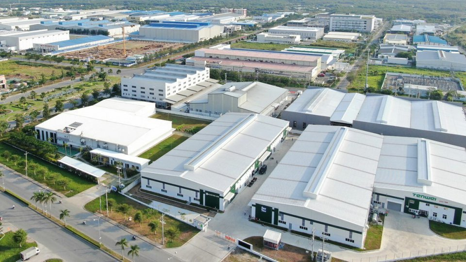
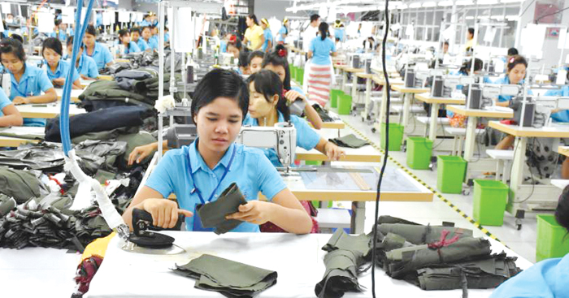
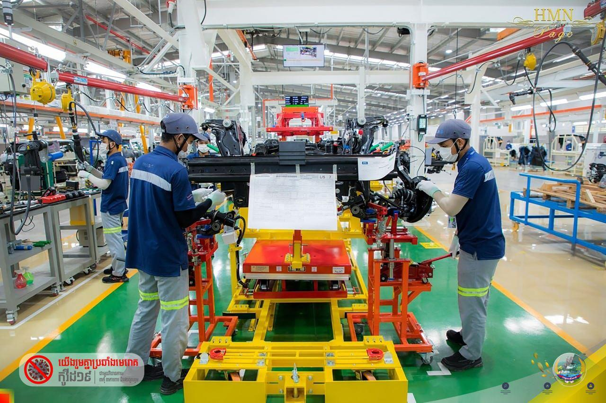
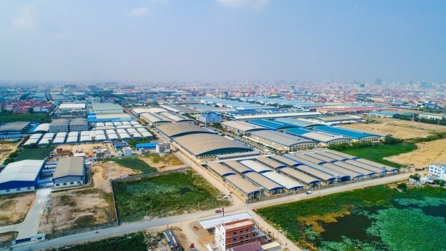
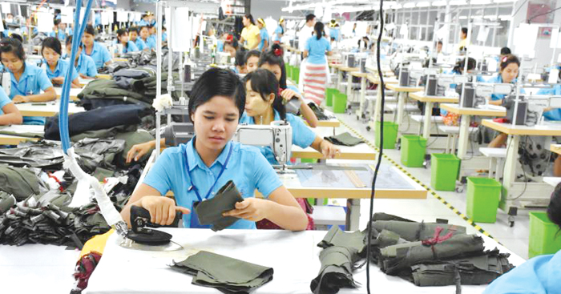
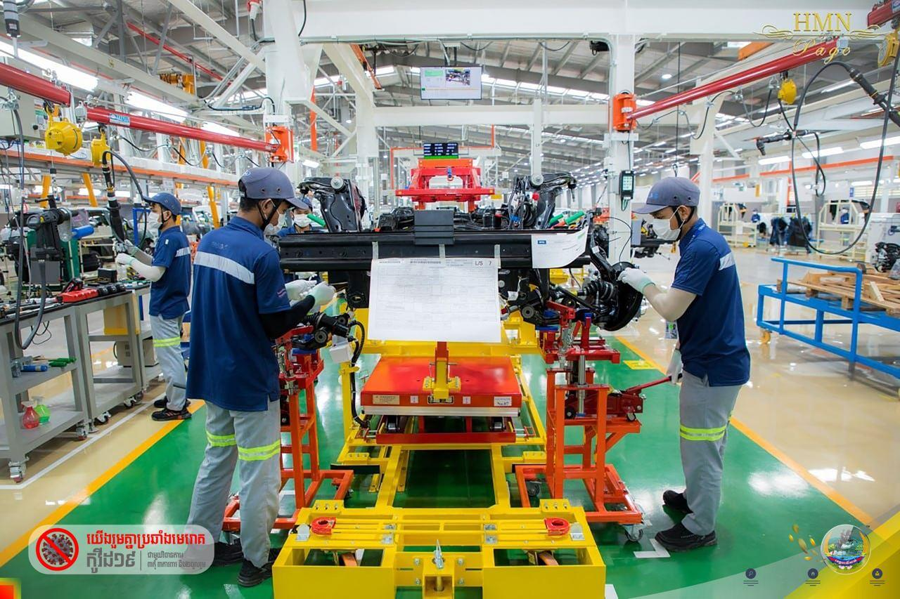
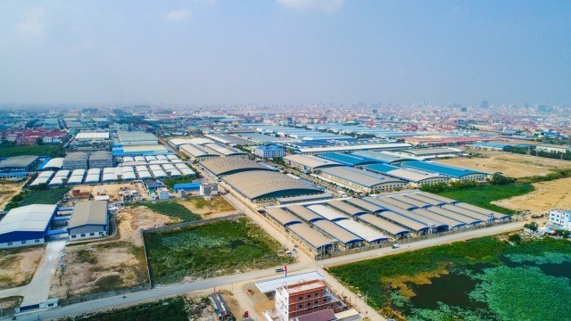

វិស័យឧស្សាហកម្ម

 





- វិស័យឧស្សាហកម្មនៅកម្ពុជា (លើកលែង ឧស្សាហកម្មនិស្សារណកម្ម និងការរុករករ៉ែ)ភាគច្រើនសំដៅលើ វិស័យកាត់ដេរ កសិកម្ម សំណង់ និងទេសចរណ៍។
រាជរដ្ឋាភិបាលកម្ពុជា បានកំណត់ទិសដៅក្នុងការប្រែក្លាយប្រទេសកម្ពុជា ឲ្យក្លាយទៅជាប្រទេស ដែលមាន ប្រាក់ចំណូលមធ្យមក្នុងឆ្នាំ២០៣០ និងមានចំណូលខ្ពស់ក្នុងឆ្នាំ២០៥០ ដូចបានកំណត់ក្នុង ផែនការយុទ្ធសាស្ត្រអភិវឌ្ឍន៍ជាតិឆ្នាំ ២០១៤-២០១៨។
ទិសដៅនេះ បញ្ជាក់ពីតួនាទីនៃវិស័យឧស្សាហកម្ម និងសហគ្រាសធុនតូច និងមធ្យម ដែលជាកត្តាជំរុញដ៏សំខាន់
ចំពោះកំណើននាពេលអនាគត។
កាលពីខែមីនា ឆ្នាំ២០១៥ រដ្ឋាភិបាល បានរៀបចំ និងអនុម័ត
គោលនយោបាយអភិវឌ្ឍន៍វិស័យឧស្សាហកម្ម ដែលជាមគ្គុទេសក៍មួយ ដើម្បីផ្តល់នូវដំណោះស្រាយជាលក្ខណៈប្រព័ន្ធ
ក្នុងការអភិវឌ្ឍវិស័យឧស្សាហកម្មឱ្យមានភាពប្រកួតប្រជែង នៅក្នុងប្រទេស កម្ពុជា។
វិស័យឧស្សាហកម្មចំបងៗ រួមមាន វិស័យកាត់ដេរ និងកម្មន្តសាលធន់ស្រាល វិស័យសិប្បកម្មកែច្នៃម្ហូបអាហារ
និងភេសជ្ជៈ វិស័យសំណង់ វិស័យអចលនទ្រព្យ វិស័យទេសចរណ៍ ព្រមទាំងវិស័យរុករករ៉ែ និងការរុករកផ្សេងៗទៀត
ដែលកំពុងកើតមាន។ អង្គការ ទិនិន្នន័យអំពីការអភិវឌ្ឍ បានពិពណ៌នាអំពីការរុករករ៉ែ និងវិស័យរុករករ៉ែ ស្ថិតនៅក្រោម
ឧស្សាហកម្មដែលអាចទាញយកបាន។
សូមមើលទៅ ឧស្សាហកម្មនិស្សារណកម្មដើម្បីដឹងបន្ថែម